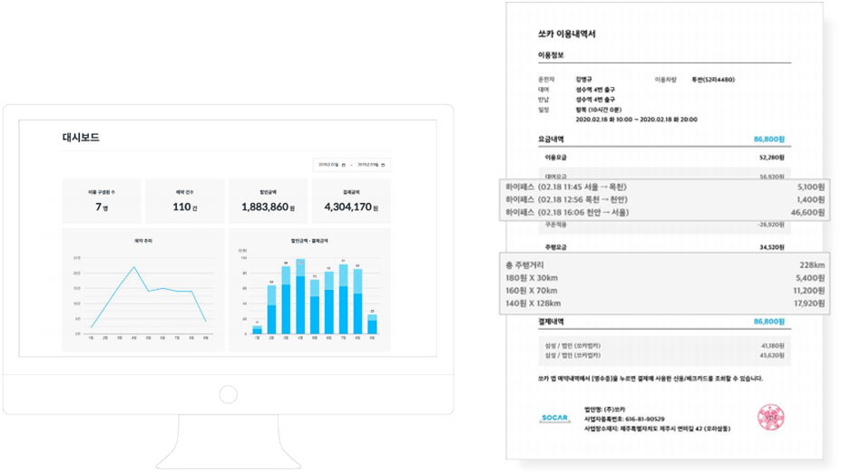
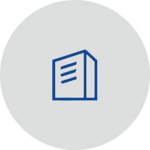
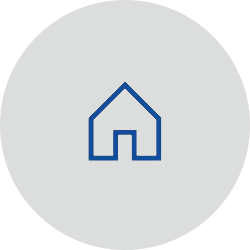
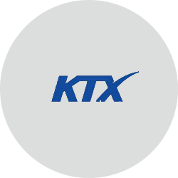
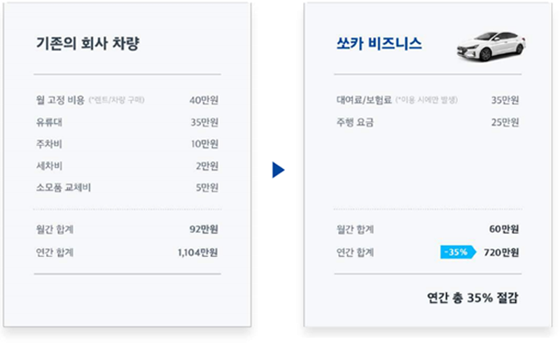

법인 전용 서비스로 임직원은 더 편리하게 이용하고, 회사의 불필요한 비용은 줄여보세요.
-
번거로운 업무가 사라집니다. 이용 현황을 주간/월간 단위로 자세하게 확인하고, 주유비, 하이패스 등 매번 발생하는 영수증을 보관할 필요가 없이 쏘카의 자동 결제 시스템에서 한 번에 정산하세요. *별도 신청 후 월별 정산 가능 (카드 / 세금계산서)
 -
임직원의 이동이 편리해집니다. 외근, 출장, 워크샵 등 업무 목적에 따라 전국 12,000대 쏘카를 어디서든 바로 이용할 수 있습니다.
 가까운 외근에는 회사 3분 거리 쏘카존에서 언제나!
 현장 출퇴근에는 집에서 쏘카!
 장거리 출장은 기차역과 공항, 터미널에서 쏘카로 환승!
-
불필요한 비용이 줄어듭니다. 월 렌트(리스)료, 월 주차비, 자차 지원금 등 매월 발생하는 고정비가 없습니다. 불필요한 고정비는 줄이고 필요할 때만 이용해서 비용을 약 35% 절감하세요. *회사 차량(1대) 주 3회 이용 기준
